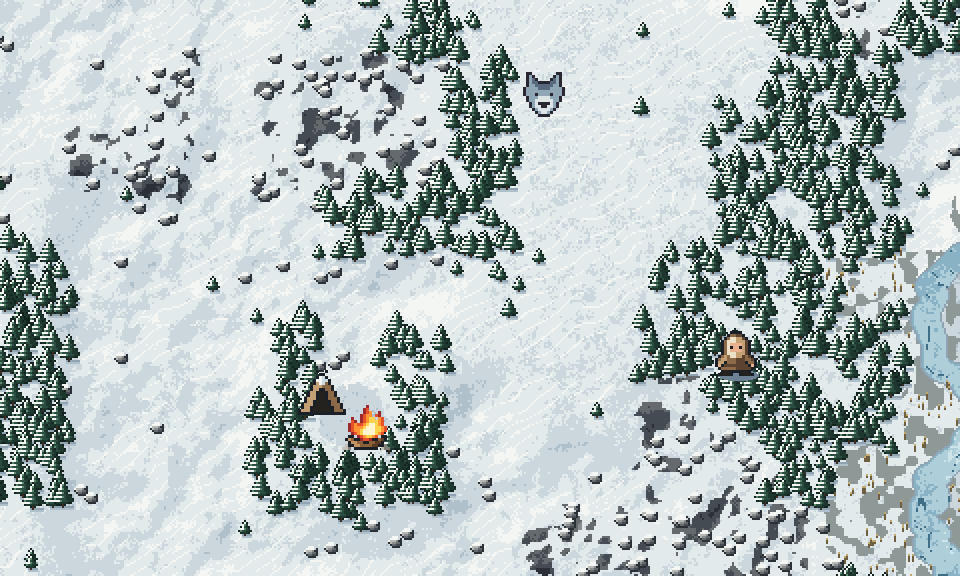
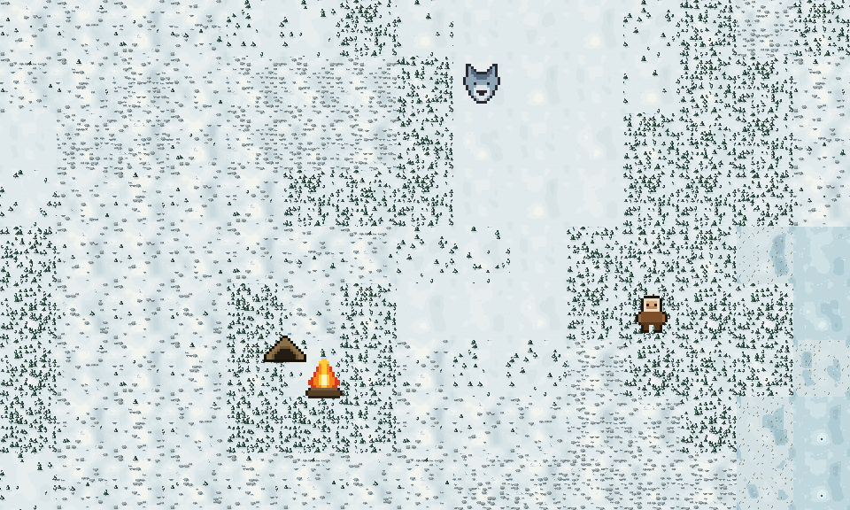
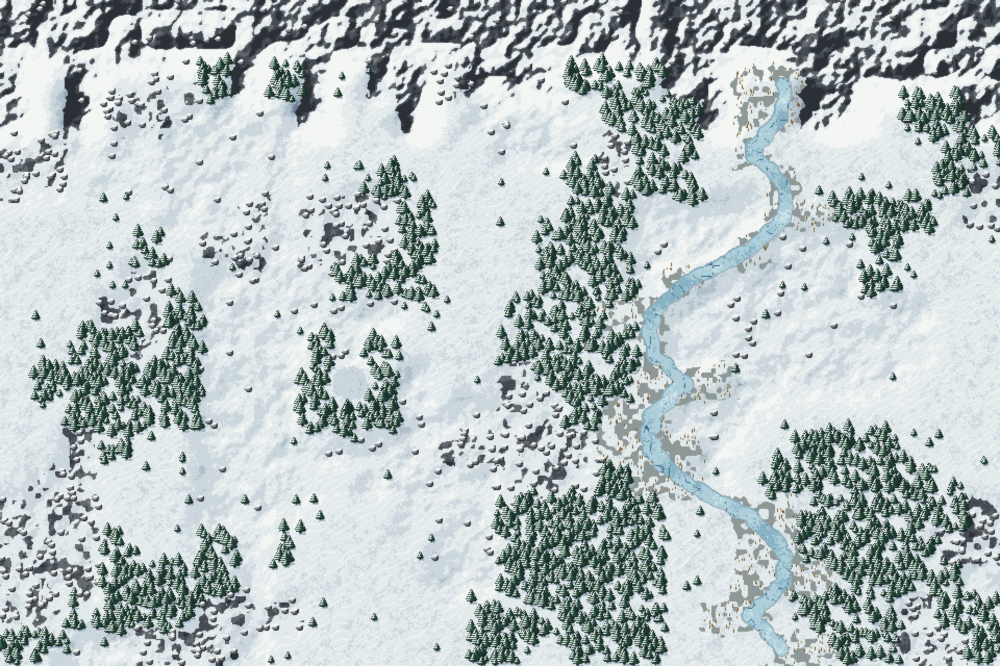

<title>Valley Terrain Test</title>
<meta name="claude:viewport-fit-sides" content="cover">
<link rel="stylesheet" href="https://fonts.googleapis.com/css2?family=Pixelify+Sans:wght@500;700&family=Barlow+Semi+Condensed:wght@400;500;600&display=swap">
<style>
/* Layout: one column; a drag-to-compare plate at game zoom, then the whole valley, then notes. Single dark look, like the game. */
:root {
  --bg: #15191c; --plate: #1d2327; --line: #2e383e; --fg: #e3eaec; --dim: #93a3ad; --ember: #f5811f; --ice: #9cc3d1;
  --display: "Pixelify Sans", ui-monospace, monospace; --body: "Barlow Semi Condensed", system-ui, sans-serif;
  color-scheme: dark;
}
html, body { background: var(--bg); color: var(--fg); }
body { font: 17px/1.5 var(--body); padding-left: max(16px, env(safe-area-inset-left, 0px)); padding-right: max(16px, env(safe-area-inset-right, 0px)); padding-block: 28px 56px; }
main { max-width: 980px; margin: 0 auto; display: grid; gap: 28px; }
h1, h2 { font-family: var(--display); font-weight: 700; margin: 0; text-wrap: balance; }
h1 { font-size: 34px; }
h2 { font-size: 20px; color: var(--ice); }
p { margin: 0; max-width: 65ch; color: var(--dim); }
header { display: grid; gap: 8px; }
.cmp { position: relative; width: 100%; aspect-ratio: 960 / 576; border: 1px solid var(--line); overflow: hidden; user-select: none; touch-action: pan-y; cursor: ew-resize; }
.cmp img { position: absolute; inset: 0; width: 100%; height: 100%; image-rendering: pixelated; max-width: none; }
.cmp .top { clip-path: inset(0 calc(100% - var(--x, 50%)) 0 0); }
.cmp .bar { position: absolute; top: 0; bottom: 0; left: var(--x, 50%); width: 2px; background: var(--ember); transform: translateX(-1px); }
.cmp .tag { position: absolute; top: 10px; font: 600 13px var(--body); letter-spacing: .06em; text-transform: uppercase; background: rgba(21,25,28,.85); padding: 3px 8px; }
.cmp .l { left: 10px; } .cmp .r { right: 10px; color: var(--ice); }
input[type=range] { width: 100%; accent-color: var(--ember); }
input[type=range]:focus-visible { outline: 2px solid var(--ember); outline-offset: 2px; }
.full { overflow-x: auto; border: 1px solid var(--line); }
.full img { display: block; width: 100%; min-width: 640px; image-rendering: pixelated; max-width: none; }
.notes { display: grid; grid-template-columns: repeat(auto-fit, minmax(260px, 1fr)); gap: 14px; }
.note { background: var(--plate); border-left: 3px solid var(--line); padding: 14px 16px; display: grid; gap: 6px; min-width: 0; }
.note.good { border-color: var(--ice); } .note.bad { border-color: var(--ember); }
.note h3 { margin: 0; font: 600 15px var(--body); letter-spacing: .06em; text-transform: uppercase; }
.note ul { margin: 0; padding-left: 18px; color: var(--dim); display: grid; gap: 4px; }
code { font-size: 14px; color: var(--fg); }
.pairs { display: grid; grid-template-columns: repeat(auto-fill, minmax(190px, 1fr)); gap: 10px; }
.pair { display: grid; gap: 6px; background: var(--plate); padding: 10px; min-width: 0; }
.pair .row { display: flex; gap: 8px; justify-content: center; padding: 10px; }
.pair.map .row { background: #dfe7ea; }
.pair.hud .row { background: #11151a; }
.pair img { width: 64px; height: 64px; image-rendering: pixelated; }
.pair span { font-size: 14px; color: var(--dim); text-align: center; }
.pair .verdict { color: var(--ice); }
.pair .verdict.worse { color: var(--ember); }
@media (prefers-reduced-motion: reduce) { * { transition: none !important; } }
</style>

<main>
  <header>
    <h1>Valley terrain test</h1>
    <p>The prototype's own 30 × 20 valley, at the game's 64 px per tile (100 m). Drag across the picture: left is the current per-tile art, right is the test. Each side uses its own fire, shelter and player; the wolf is the existing portrait in both.</p>
  </header>

  <section style="display:grid;gap:10px">
    <div class="cmp" id="cmp" style="--x:50%">
      
      
      <div class="bar"></div>
      <span class="tag l">Current</span><span class="tag r">Test</span>
    </div>
    <label for="slider" style="color:var(--dim);font-size:14px">Split position</label>
    <input id="slider" type="range" min="0" max="100" value="50">
  </section>

  <section style="display:grid;gap:10px">
    <h2>The whole valley</h2>
    <p>Painted as one image rather than tile by tile: borders get noise, the creek is one channel, and everything is lit from the top left over a shared height map.</p>
    <div class="full"></div>
  </section>

  <section style="display:grid;gap:14px">
    <h2>Most-seen sprites and HUD icons</h2>
    <p>Each pair is shown at 4× on the background it lives on. The left of each pair is current; the right is the test. One outline colour and one palette, shared with the terrain above, lit from the top left.</p>
    <div class="pairs" id="pairs"></div>
  </section>

  <section class="notes">
    <div class="note good"><h3>Works</h3><ul>
      <li>Forest, open snow, rock and ice read by brightness alone.</li>
      <li>The creek reads as one line; there are no tile seams.</li>
      <li>The existing 16 px sprites sit in it without restyling.</li>
    </ul></div>
    <div class="note bad"><h3>Still rough</h3><ul>
      <li>Camp now gets a trampled clearing. The player still needs a ground shadow to stand out against spruce.</li>
      <li>The new player sprite is the weakest piece; the current one reads better.</li>
      <li>The marsh grey reads like concrete.</li>
      <li>Engine cost: bake the map to a texture at world generation and redraw regions when snow or paths change.</li>
    </ul></div>
  </section>

  <p style="font-size:14px">Source: <code>dev/prototypes/art/terrain2.py</code> on branch <code>worktree-short-loop-plan</code>.</p>
</main>

<script>
const PAIRS = [
  ['Campfire', 'map', 'fire', 'campfire', 'Better: hotter core, logs read'],
  ['Shelter', 'map', 'shelter', 'shelter', 'Better: snow on the ridge'],
  ['Embers', 'map', 'embers', 'embers', 'Better: you can see the glow'],
  ['Player', 'map', 'player', 'player', 'Not yet: less contrast than current', true],
  ['Fire', 'hud', 'ui_fire', 'hud_fire', 'Better'],
  ['Body temp', 'hud', 'ui_temperature', 'hud_temperature', 'Better'],
  ['Water', 'hud', 'ui_water', 'hud_water', 'Better'],
  ['Food', 'hud', 'ui_food', 'hud_food', 'Different: roast haunch'],
  ['Energy', 'hud', 'ui_energy', 'hud_energy', 'About even'],
  ['Foraging', 'hud', 'ui_foraging', 'hud_foraging', 'Better: a find in the basket'],
  ['Pack', 'hud', 'ui_backpack', 'hud_backpack', 'About even'],
  ['Warning', 'hud', 'ui_warning', 'hud_warning', 'Better'],
  ['Beasts', 'hud', 'ui_beasts', 'hud_beasts', 'About even'],
  ['Day', 'hud', 'ui_sun', 'hud_sun', 'Better'],
  ['Night', 'hud', 'ui_moon', 'hud_moon', 'Better: a star'],
];
document.getElementById('pairs').innerHTML = PAIRS.map(([name, bg, oldf, newf, verdict, worse]) =>
  `<div class="pair ${bg}"><div class="row"></div>` +
  `<span>${name}</span><span class="verdict${worse ? ' worse' : ''}">${verdict}</span></div>`).join('');
const cmp = document.getElementById('cmp'), slider = document.getElementById('slider');
const set = pct => { pct = Math.max(0, Math.min(100, pct)); cmp.style.setProperty('--x', pct + '%'); slider.value = pct; };
const fromEvent = e => { const r = cmp.getBoundingClientRect(); set((e.clientX - r.left) / r.width * 100); };
let drag = false;
cmp.addEventListener('pointerdown', e => { drag = true; cmp.setPointerCapture(e.pointerId); fromEvent(e); });
cmp.addEventListener('pointermove', e => { if (drag) fromEvent(e); });
cmp.addEventListener('pointerup', () => { drag = false; });
slider.addEventListener('input', () => set(+slider.value));
</script>
